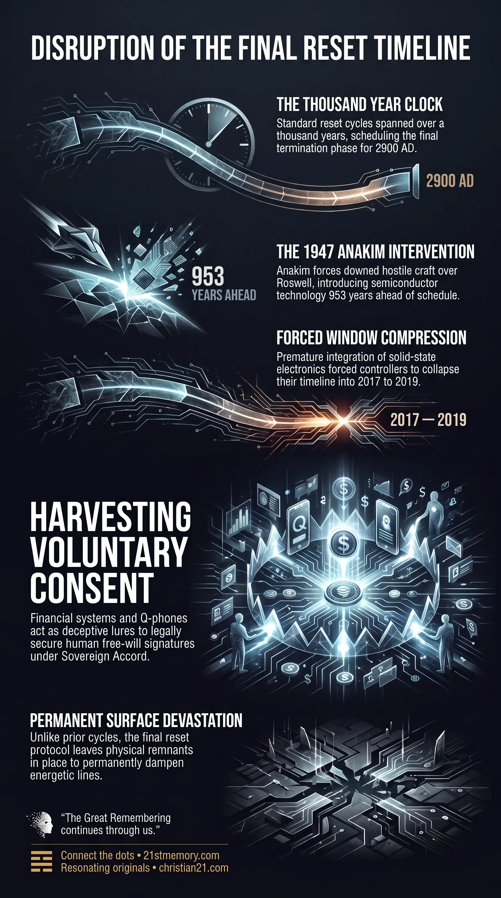

The 8th Reset
The 8th Reset — The final realm-3 reset cycle, forced into 2017–2019 as a harvest of free-will signatures rather than a new civilization.

The 8th Reset — The final realm-3 reset cycle, forced into 2017–2019 as a harvest of free-will signatures rather than a new civilization.

How Roswell Forced a Rushed Reset — The 1947 Anakim strike and point-contact transistor pulled the thousand-year clock forward by more than nine centuries.
The 8th Reset—also recognized as the 2017–2019 Reset or final reset—defines the eighth and final planetary reset cycle executed within realm-3. Operating as an accelerated termination phase of the simulation grid, this cycle was forced into manifestation between 2017 and 2019 rather than adhering to the baseline multi-century timetable. The defining nature of the 8th Reset is not the construction of an enduring physical civilization, but rather the deployment of artificial lures designed to harvest the free-will signature of incarnated populations. This cycle sits at the end of the reset harvest sequence as a forced confrontation driven by external timeline disruption. Unlike prior planetary wipes, the 8th Reset was pulled forward by over nine centuries due to strategic counter-interventions that shattered the long-range scheduling of the controlling entities. Consequently, the mechanisms deployed during this window rely heavily on high-frequency deceptive lures—specifically financial and technological promises—to induce voluntary population compliance.
The fundamental revelation of the 8th Reset is that its arrival in 2017–2019 was an emergency adjustment by the custodial controllers, forced by the premature collapse of their multi-generational timeline. Under standard operational protocols, a reset cycle runs on a thousand-year clock, spanning 1,000 to 1,500 years to allow complete social engineering, physical vessel downsizing, and narrative indoctrination. The previous major reset cycle concluded around 1900, meaning the subsequent cycle was scheduled to endure until at least 2900 AD. However, the 1947 Roswell event introduced advanced semiconductor technology 953+ years ahead of schedule, forcing the controllers to compress their final agenda into the 2017–2019 window. A secondary revelation is that the structures presented to the public during the 8th Reset—such as the Quantum Financial System, debt jubilees, and technological liberation platforms—are entirely deceptive lures. Under universal field law, direct forced override of self-sustained human fields is legally prohibited. To circumvent this boundary, the controlling apparatus engineered elaborate financial and technological salvation narratives to trick individuals into granting their explicit consent. The lure is not a real or sustainable operational system, but a transit mechanism designed to guide populations voluntarily into digital tracking grids and containment facilities. Finally, the 8th Reset was planned as a total surface harvest where no post-reset cleanup or historical restoration would occur. Had the custodians executed their original objectives, the surface would have been left in complete devastation as a permanent monument to parasitic control, bypassing the need to construct a new surface civilization.
Historically, the operational management of realm-3 relied on the thousand-year clock, a cycle lasting between 1,000 and 1,500 years per reset iteration. During each standard cycle, custodians downsized human vessels, wiped memory, and installed narrative stages—progressing from wild frontier environments to urbanized industrial grids. The last major reset cycle was finalized around 1900. Under this baseline, the human population was intended to remain in an analog, low-tech state for many centuries before the gradual, controlled introduction of global networking.
The entire thousand-year schedule was permanently shattered just 47 years into the post-1900 cycle by the 1947 Roswell incident. Advanced sensors operated by benevolent Anakim Giants detected two hostile Grey H1 Orion craft conducting non-consensual genetic harvesting and tissue extraction in New Mexico. Acting within legal boundaries to protect human life, the Anakim downed both craft over Mac Brazel's property. The resulting debris field contained critical solid-state semiconductor components, leading directly to the development of the point-contact transistor at Bell Labs in late 1947. This single event forced solid-state physics, integrated circuits, and micro-computing into consumer manufacturing nearly a millennium ahead of the custodians' plan. Because global digital surveillance and handheld networking were required for their final inversion grid, the custodians had no choice but to pull the final reset forward by 953+ years, culminating in the 2017–2019 window.
Because universal Field Law—also termed the Sovereign Accord—dictates that choice and consequence must arise from within a field, external entities cannot forcefully claim a soul field without voluntary permission. To secure compliance, the custodians constructed elaborate financial and technological lures during the 8th Reset. Promoted through public channels and controlled truther networks, the Quantum Financial Initiative offered Tier 4B asset redemptions, humanitarian project funding, and specialized Q-phones operating on 5G infrastructure. Participants were instructed to attend redemption appointments while leaving personal communication devices behind, effectively walking into containment infrastructure under their own volition. The entire financial liberation narrative functions strictly as a baiting mechanism to secure the free-will signature of target populations, rather than a genuine economic restructuring.
In contrast to prior reset cycles where elaborate repopulation agendas, clone distributions, and architectural cleanups were conducted, the 8th Reset protocol called for leaving surface devastation in situ. The custodians intended to harvest the remaining population and leave the resulting physical remnants exposed across major nodal points, aiming to permanently dampen the natural energetic resonance of the planet's ley lines.
The 8th Reset operates as the final convergence point for multiple technical and legal systems within the realm. It directly connects the 1947 Roswell craft recovery to the accelerated deployment of modern handheld computing and cellular networks. This rapid technological escalation was necessary to establish the infrastructure required for the digital lure mechanisms. Furthermore, the 8th Reset relies on the strict operational boundary established by the Sovereign Accord. Because direct field override is legally barred, the mechanics of the 8th Reset connect directly to choice architecture, media programming, and deceptive financial offers designed to bypass spiritual protections through voluntary consent. The deployment of 5G Q-phones and financial tracking apps directly links the 8th Reset to geographic containment systems, such as 15-Minute Cities and isolation centers. Upward relationship to higher branches remains strictly operational.
Understanding the 8th Reset requires recognizing that its associated financial and technological systems are psychological traps designed to harvest consent. Discerning individuals must evaluate all promises of sudden wealth, institutional redemption, or specialized hardware as components of the free-will signature lure rather than legitimate liberation platforms. Furthermore, recognizing that the 2017–2019 timeline was forced forward by over 900 years exposes a fundamental vulnerability in the parasitic control structure. The compressed timeline forced the controllers to operate hastily, exposing their lure mechanisms in plain sight and providing conscious individuals the opportunity to withhold consent, maintain sovereignty, and reject the final harvest protocols.
This topic is free to share. Support the archive →